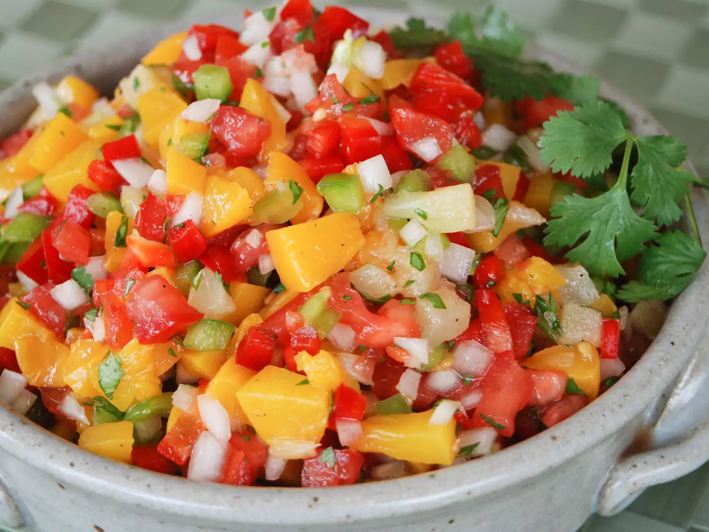

Mango, Peach and Pineapple Salsa

Description
This peach and mango salsa with pineapple and jalapeño is fruity, spicy, and yummy on almost everything from chips to BBQ chicken, tacos, and even tofu.
Ingredients
- 2 mangos, peeled, seeded and chopped
- 2 peaches, halved, pitted, and cut into ½-inch dice
- 4 tomatoes, chopped
- 1 white onion, diced
- 1 red bell pepper, diced
- 1 yellow bell pepper, diced
- 1 cup diced fresh pineapple
- 1 cup chopped fresh cilantro, or to taste
- ¾ cup water
- 2 tablespoons white sugar, or to taste
- 2 tablespoons lime juice
- 1 small jalapeño pepper, minced
- 1 clove garlic, minced
- 1 teaspoon salt
Steps
- Place mangos, peaches, tomatoes, onion, red pepper, yellow pepper, pineapple, and cilantro in a large bowl. Stir in water, sugar, lime juice, jalapeño, garlic, and salt until well combined.
- For best flavor, cover and refrigerate until chilled before serving.
Home